08Fictional healthcare brand · Content, design & build
Make the treatment conversation as clear as the welcome.
One welcome, followed from a generic smile promise to the live page.
Scroll: write, design, build
Goodkind Dental is an original fictional brand. MINT dentistry was a research reference, not a client. No patient research, clinical review, live integration or measured campaign result is claimed.
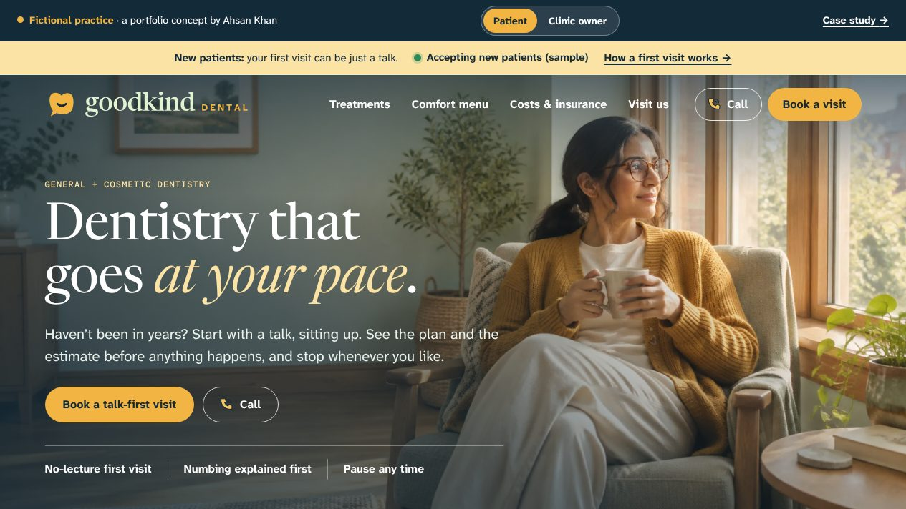
01Write
Start with the nervous patient.
The generic line promised a dream smile. It ignored the years someone stayed away.
The first draft: Your dream smile starts with us.
AK · 01A smile promise serves one reader.
Then let them set the pace.
Talk first, sitting up. See the plan and the estimate before anything happens.
The rewrite: Dentistry that goes at your pace.
02Design
Put comfort above the fold.
Grey boxes first. The line, a talk-first button, then three promises in a row.
AK · 02The first click is a talk.
Make it feel like Goodkind.
Navy and mint, a sunny consultation room and a warm serif.
03Build
Ship the real page.
One of 25 pages. The comfort card is drawn in the browser; nothing is sent.
AK · 03Live, and ready to click.
The front desk reads it too.
Flip it. The clinic owner sees where the card’s sentences could land.
- 01Write
- 02Design
- 03Build
I wrote it, designed it and built it.
From the first click to the front desk, you talk to me.
Explore all four social profiles ↗For the curiousThe video, the full kit, every version and how it was checked
- Project
- Independent fictional practice
- Role
- Research, content, brand direction & build
- Deliverable
- 25 pages · 4 social profiles · Comfort card
- Tools
- HTML, CSS & JavaScript · its own static generator
The kit: what Goodkind Dental shipped, beyond the pages
Reality checkThe real market, references and rules behind a fictional practice
Modeled on · Austin, TX
Texas adults are among the least likely in the country to have seen a dentist in the past year, and many Texans have no health coverage at all. A practice aimed at people who have put off dental care, with plain cost language, fits that gap.
- 58.1% of Texas adults visited a dentist or dental clinic in 2024, ranking Texas 49th among states (America's Health Rankings, CDC BRFSS data). Source ↗
- 16.7% of Texans had no health insurance in 2024, ranking Texas 50th among states (America's Health Rankings, Census ACS data). Source ↗
- Austin had 1,002,632 residents in 2025, up 0.4% from 2024 (City of Austin, citing Census Bureau estimates). Source ↗
Real
- MINT dentistry and Aspen Dental as public-site references (no affiliation)
- America's Health Rankings and City of Austin figures above
- Texas State Board of Dental Examiners advertising rules (22 TAC §108.52, .53, .55, .57)
- The No Surprises Act, the FTC review rule and the ADA
- The working website and its cost-question tools
Invented
- The name Goodkind Dental and its brand identity
- The Goodkind Central and Neighborhood Practice location concepts
- The dental, treatment-planning and coordinator roles
- Service scope and the visit planner
- The social profiles and the cost-conversation campaign
- AI-generated dental interiors
Real providers reviewed References, not clients
- MINT dentistry ↗What their site does: Publishes general, restorative, cosmetic and sedation routes, and its discount plan page states "THIS IS NOT INSURANCE" and lists exclusions such as deep cleaning and specialist treatment.What this concept does: Goodkind has no membership plan, offer or price. It shows where a plan's status and limits would be explained if a real practice added one.
- Aspen Dental ↗What their site does: A national group that leads with new-patient exam offers and percentage discounts, each with fine print on eligibility, participating offices and expiry dates, and a savings plan labeled as not insurance.What this concept does: Goodkind leads with a no-pressure first visit and a written-estimate checklist instead of an offer, so there are no fee disclosures to get wrong in a fictional concept.
Rules the marketing has to follow
| Rule | What it requires | On this site |
|---|---|---|
| TSBDE: general dentist label ↗ | A Texas dentist who is not licensed in a recognized specialty must show "General Dentist" or "General Dentistry" right after their name in ads for specific services, in type at least as large as the largest service listed (22 TAC §108.55). Cosmetic dentistry is not a recognized specialty. | The brand line reads "General + cosmetic dentistry" and no dentist is named or called a specialist. Would need: the required label beside every named dentist in service ads. |
| TSBDE: trade names ↗ | A practice advertising under a trade name such as "Goodkind Dental" must prominently name the owner(s) and at least one dentist practicing under that name at each advertised location, and the name must not be misleading (22 TAC §108.52, amended effective May 22, 2025). | Would need: owner and dentist names on every ad and location page. The concept has no real owner or dentists. |
| TSBDE: misleading dental advertising ↗ | Texas dental ads may not promise results or satisfaction, claim care "without pain or discomfort", or use testimonials from anyone who is not a patient of record. Patient photos need written consent before identifying details are shared and must say "Actual results may vary" (22 TAC §108.57). | No testimonials, before-and-after photos or pain-free claims; the cosmetic guide invites visitors to look "beyond a before-and-after photo". Would need: consent records and the "Actual results may vary" line on any future patient photos. |
| TSBDE: advertised fees and discounts ↗ | A dental ad with a price must name the service, related services that may cost extra, that the fee is a minimum, and the dates it applies. A discount must show the standard fee, and nothing may be called "free" when a third party pays for it (22 TAC §108.53). | The site lists no fees, offers, memberships or financing products and says so on the costs page. Would need: these disclosures on any future new-patient offer. |
| No Surprises Act good-faith estimate ↗ | The good-faith estimate requirement applies to dental offices when the patient is uninsured or self-pay: a written estimate within three business days of a request, for services scheduled at least three days ahead. | The costs page and the "Before you say yes to a treatment plan" guide separate the practice estimate from the insurer's decision and prompt patients to ask about every stage. Would need: a written good-faith estimate process for uninsured and self-pay patients and the federal notice. |
| FTC rule on fake reviews and testimonials ↗ | Since October 21, 2024 (16 CFR part 465), businesses may not create, buy or share fake or AI-generated reviews, pay for reviews that express a set sentiment, suppress negative reviews with threats, or post staff reviews without disclosing the connection. The FTC can seek civil penalties. | The social previews state that no live account, follower count, testimonial or engagement is claimed, and there are no star ratings. Would need: a review policy that complies with both this rule and the Texas patient-of-record testimonial rule. |
| ADA Title III web accessibility ↗ | DOJ guidance says the ADA covers the web services of businesses open to the public, naming hospitals and medical offices. There is no Title III technical regulation; DOJ points to WCAG and Section 508 as helpful standards. | Every page declares its language, has a skip link and gives every image alt text. No formal WCAG audit has been run. Would need: an audit before launch. |
Sources checked October 2026. This is a summary for a portfolio, not legal advice; a real clinic would confirm its obligations with counsel.
Measured qualityLighthouse and axe, run October 29, 2026
- 90Performance
- 100Accessibility
- 100Best practices
- 8/9SEO checks
- Accessibility issues (axe, WCAG 2.1 AA)
- 0
- across 6 pages
- Homepage weight
- 439 KB
- everything a first visit downloads
- Largest content painted
- 3.2 s
- simulated mid-range phone, slow 4G
- Layout shift
- 0.02
- 0.1 or less counts as good
Homepage measured with Lighthouse 12 (mobile) on /sites/goodkind/, served locally without compression, so live numbers should be at least this good. The one SEO check that fails is “page can be indexed”: demos are kept out of search on purpose because they’re fictional. Rerun with scripts/kit/measure-quality.mjs.
Screens8 desktop · 2 phone
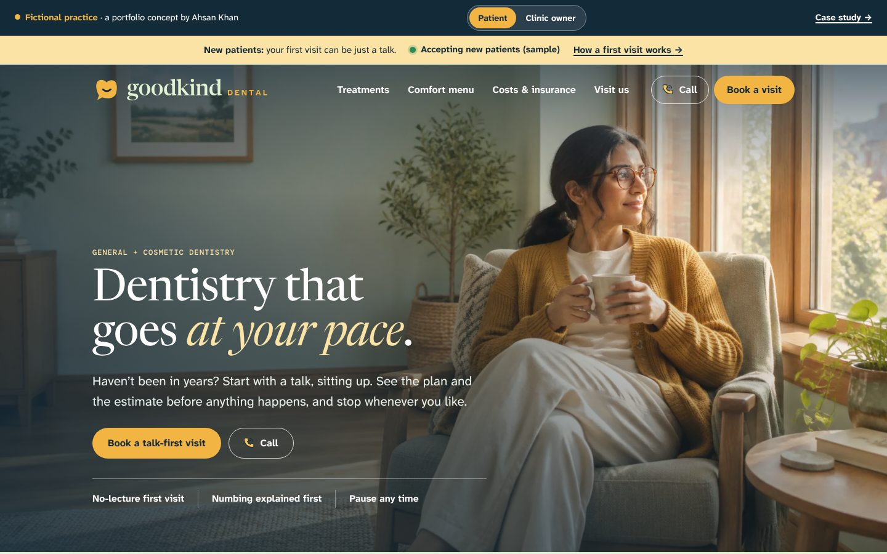
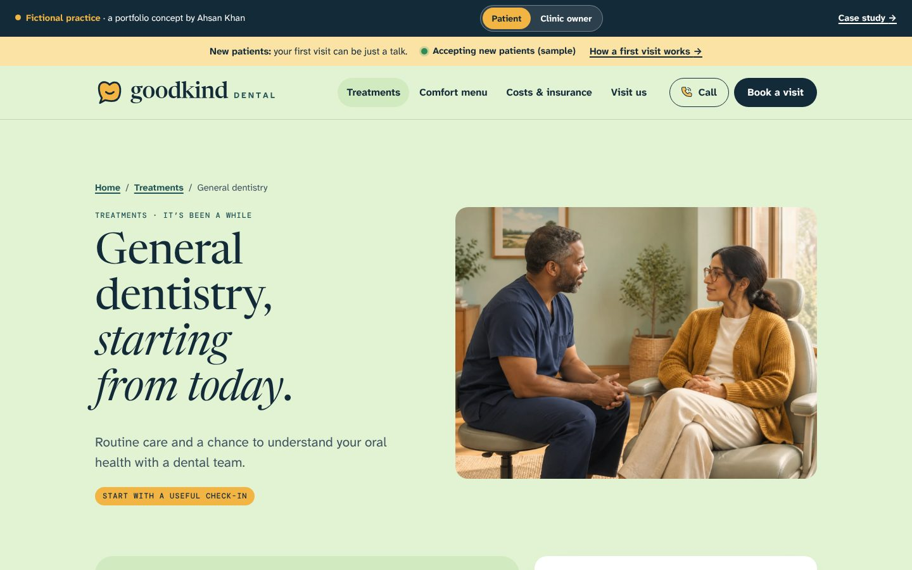
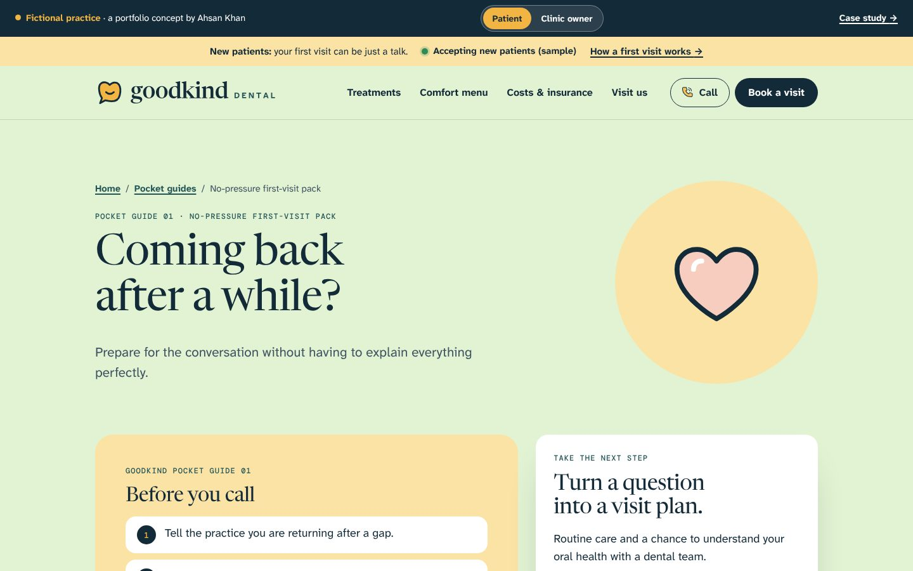
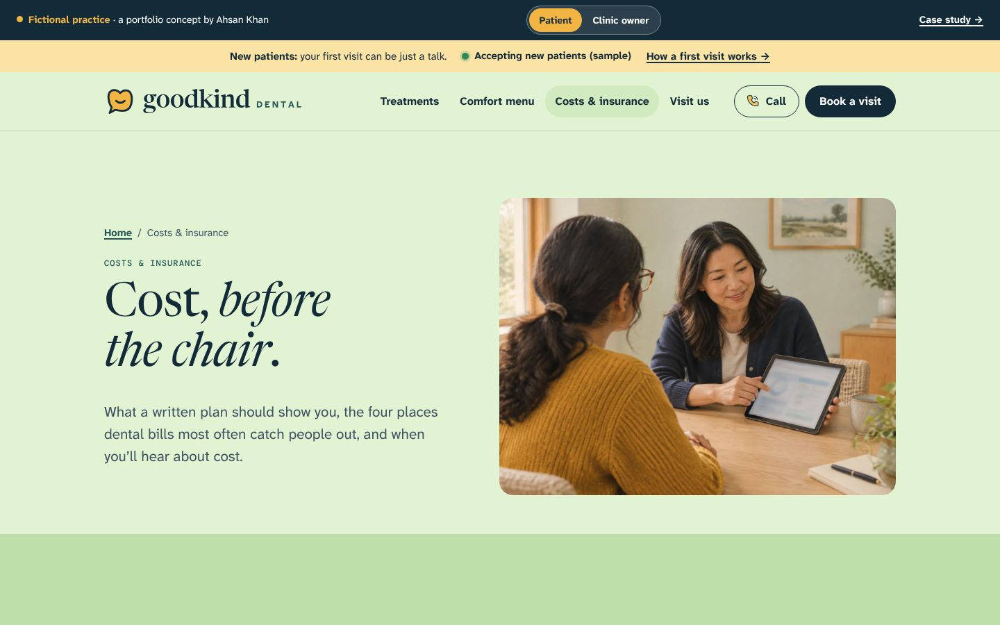
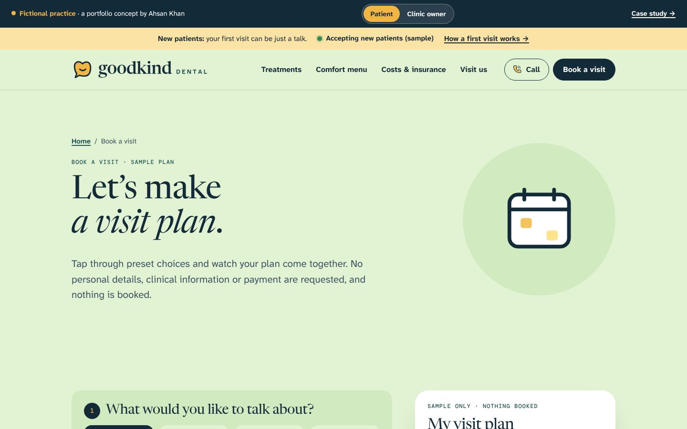
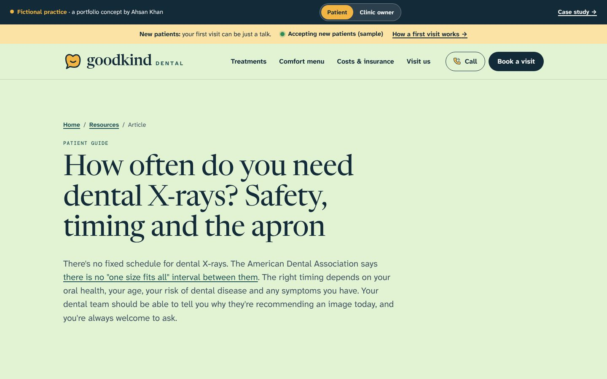
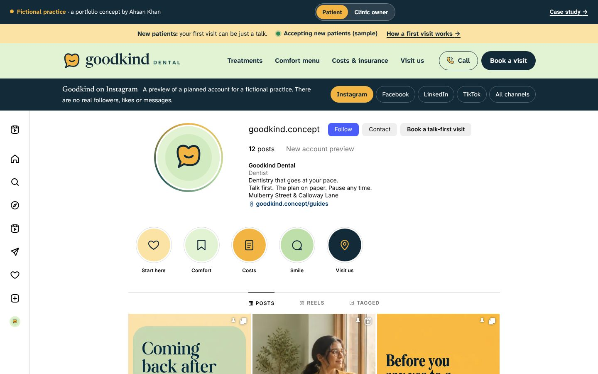
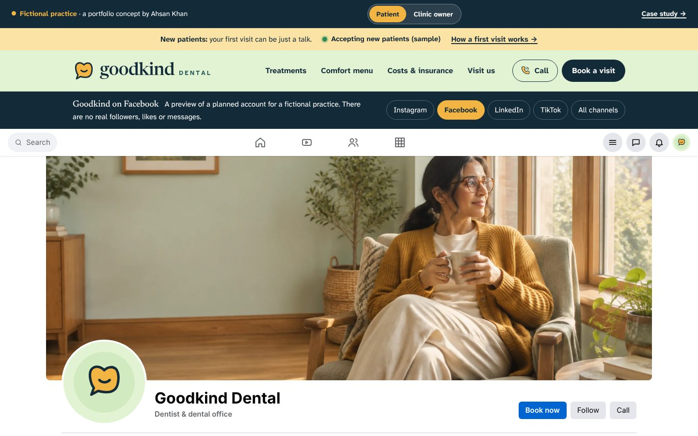
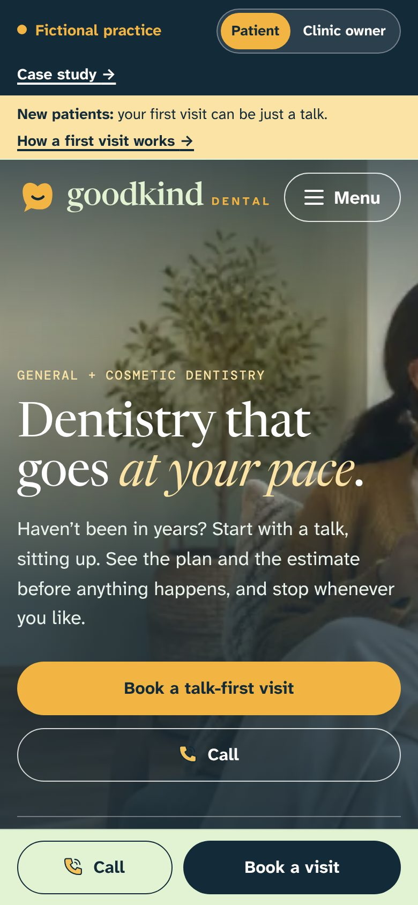
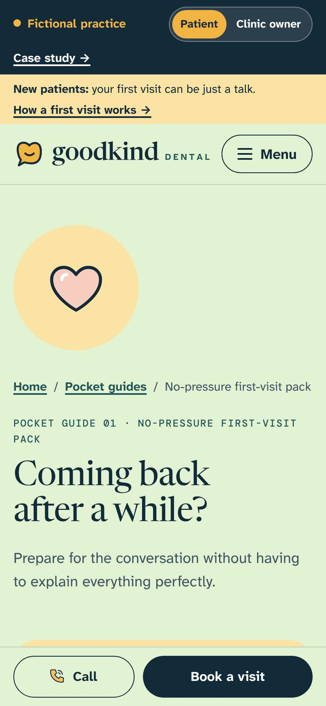
Captured from the live demo on this site. Each screen opens its page in a new tab.
Process documentsBrief · sitemap · homepage outline · keyword map
The problem
Offers and smile photography can overshadow treatment choices, dental anxiety and the total cost.
Goals
- Connect a friendly first impression to visit preparation and comfort preferences.
- Put the written plan and cost conversation before the treatment decision.
- Keep routine care, a new concern and an elective smile goal on separate routes with different expectations.
- Carry each social post into a relevant guide, care page and the sample visit planner, with no countdown offers.
Questions the site must answer
- What if it has been years since my last visit?
- What happens at a first assessment?
- Can I discuss comfort needs before treatment?
- Do I have to agree to the whole treatment plan at once?
- What will I owe, and what should a written estimate include?
Keyword map
| Topic | Targets | Intent | Page |
|---|---|---|---|
| General dentistry | new patient dentist · dental checkup and cleaning · general dentist accepting new patients | commercial | general-dentistry.html |
| Preparing to return | first dental visit checklist · how to tell your dentist you’re nervous · questions to ask a new dentist | informational | guide-back-to-dentist.html |
| Restorative care | tooth repair options · tooth replacement options · restorative dentistry | commercial | restorative-care.html |
| Treatment plan costs | dental treatment plan cost · dental estimate vs insurance · questions to ask about dental financing | informational | guide-cost-conversation.html |
| Cosmetic consultation | cosmetic dentist consultation · smile consultation · is cosmetic dentistry covered by insurance | commercial | cosmetic-dentistry.html |
| Planning a smile goal | questions to ask a cosmetic dentist · cosmetic dental treatment maintenance · cosmetic dentistry risks and alternatives | informational | guide-smile-goals.html |
| A new dental concern | dentist for a toothache · chipped tooth dentist · same-day dental appointment | commercial | dental-concerns.html |
| Costs and coverage | dental insurance coverage questions · how much does a dental visit cost · dental out-of-pocket cost | commercial | costs.html |
| Local discovery | dentist near me · dentist accepting new patients near me · dental practice Austin | local | locations.html |
| How often do you need dental X-rays? Safety, timing and the apron | how often do you need dental x-rays · are dental x-rays safe · lead apron dental x-ray | informational | how-often-dental-x-rays.html |
Keyword targets are proposals from patient-question research; search volumes were not measured.
Flagship article1,018 words · 8 sources
Search result preview Mockup
goodkinddental.example › how-often-dental-x-rays
How Often Do You Need Dental X-Rays? Safety and Timing
There's no set schedule for dental X-rays. Learn what decides the timing, how safe they are, why the lead apron is going away and what to ask your dentist.
- Target
- how often do you need dental x-rays
- Also covers
- are dental x-rays safe · lead apron dental x-ray · dental x-rays during pregnancy · cone beam CT dental
- Intent
- informational: the reader has been told they need X-rays, or is about to visit a dentist, and wants to know whether the images are necessary and safe before agreeing.
- Review
- Written by Ahsan Khan. The practice is fictional. In client work, your clinician reviews and approves every article before it is published.
The 8 sources
- X-Rays/Radiographs (American Dental Association)
- X-Rays (MouthHealthy, American Dental Association)
- Using thyroid collars during radiographic exams no longer recommended by ADA (ADA News, February 2024)
- Dental Cone-beam Computed Tomography (U.S. Food and Drug Administration)
- 22 Tex. Admin. Code § 113.2, X-Ray Laboratories (Cornell Legal Information Institute)
- Stakeholder meeting on lead apron use, September 27, 2024: summary of comments (Texas State Board of Dental Examiners)
- Tooth abscess (MedlinePlus Medical Encyclopedia)
- Dental emergencies (MouthHealthy, American Dental Association)
Read “How often do you need dental X-rays? Safety, timing and the apron”
Search volumes were not measured, so none are claimed.
Ad packGoogle search · Facebook & Instagram · policy notes
Search ad preview Mockup
Sponsored · goodkinddental.example/index
Goodkind Dental | Your Kind of Dentist | Dentist in Austin
Routine care, a dental concern or a smile goal. Understand what happens next first.
Campaign: Goodkind | Search | General + Cosmetic Dental | Austin (sample). Final page: index.html.
All 15 headlines 30 characters max
- Goodkind Dental15
- Your Kind of Dentist20
- Dentist in Austin17
- General + Cosmetic Dentistry28
- Good Care. Clear Choices.25
- Coming Back After a While?26
- Comfort Preferences Welcome27
- Know the Plan First19
- Written Treatment Plans23
- Ask About Cost Up Front23
- Smile Consults, No Pressure27
- Routine Visits and Cleanings28
- Plan Your Next Visit20
- Two Austin-Area Practices25
- A Little Less Putting It Off28
Descriptions 90 max
- Routine care, a dental concern or a smile goal. Understand what happens next first.83
- Returning after a gap? Tell us. We start with a conversation, not a lecture.76
- Ask for a written plan with costs and stages before you agree to any treatment.79
- Cosmetic consultations cover suitability, limits, upkeep and a written estimate.80
Keywords
"dentist austin" · [family dentist austin] · "dental checkup austin" · "dental cleaning austin" · "new dentist austin" · "cosmetic dentist austin" · "cosmetic dental consultation" · "dental crown consultation austin" · "going back to the dentist after years" · [general dentist austin]
Negative keywords
jobs · salary · dental assistant school · hygienist programs · free dental · diy · dental insurance plans
Facebook & Instagram ads Mockups
How these ads stay within the rules
| Rule | How it’s handled |
|---|---|
| No implied personal attributes ↗ | Copy describes the clinic, never the reader. No "you" + condition lines such as "Embarrassed by your smile?" or "Scared of the dentist?"; the return-visit ad speaks about coming back, not the reader's anxiety. |
| No before/after or result claims ↗ | No smile before/after photos, "perfect smile" or "painless" claims. The image is an empty fictional treatment room, not a patient result. |
| No fear, false urgency or improbable results ↗ | No countdowns, "today only" lines, or illness-based fear. No new-patient specials, prices or financing claims, because the site lists none. Cost lines invite questions about a written estimate instead. |
| Health is a sensitive targeting category ↗ | Search campaigns run on keywords and location only. No remarketing, Customer Match or custom segments built from dental or cosmetic page visitors. |
| Sensitive detailed targeting is gone ↗ | Meta audiences use location and age only. No health-cause, condition or life-event interests, even where a similar option still appears. No cosmetic, beauty or dental-condition interests. |
| Tracking pixels on a health site ↗ | Meta Pixel and Google tags stay off the visit planner and any form that carries a visit reason. Conversions are counted from a generic thank-you page with no visit reason in the URL, and any vendor that would touch PHI needs a BAA. |
Written for a fictional practice; nothing here has run or been measured. Every character limit was checked by script.
Local SEO & reviewsGoogle Business Profile · review requests · safe replies
Business Profile Mockup
Goodkind Dental
Dentist · Cosmetic dentist · Dental clinic
Goodkind Dental offers general and cosmetic dentistry at Goodkind Central and The Neighborhood Practice. Start with a routine visit, a dental concern or a smile goal. If it has been a while since your last visit, just tell us; we start with a conversation about your history and comfort preferences. Before any treatment, we explain the options, the stages and the expected costs in a written plan, and we separate our estimate from your insurer’s decision. Cosmetic consultations cover suitability, limits, maintenance and a written estimate, with time to decide. Call us to ask about an appropriate visit for a new dental concern.
Services
- General dentistry. Routine visits and check-ins, including a return after time away. We review your history and comfort preferences and explain any recommended imaging before it happens.
- Restorative care. A conversation about repairing or replacing a tooth. We explain alternatives, risks, stages and maintenance, and give you a written plan with costs and timing.
- Cosmetic consultations. Explore a smile goal with the dentist: suitability for your oral health, limits, alternatives, upkeep and a written estimate. A consultation is not a commitment.
- Dental concern visits. Call us about a new dental concern and we will tell you whether we can see you and what to do if we cannot. For a medical emergency, call 911.
Posts
- Update
Coming back after a while? You don’t need a perfect explanation. Tell us it has been a gap, name any past difficult experiences, and ask how the first visit is structured.
Button: Learn more - Update
A treatment plan should include a cost conversation. Ask which stages are included, how our estimate differs from your insurer’s decision, and who answers billing questions.
Button: Learn more - Event
Sample event: a relaxed open evening at The Neighborhood Practice. Tour the rooms, meet the coordinators and ask how visits and written estimates work. No exams or treatment.
Button: Learn more
Questions & answers
- It has been years since my last visit. Is that a problem?
- Not at all. Tell us when you call. We will explain how the first assessment works and talk through comfort, cost and the order of care.
- Do I have to agree to the whole treatment plan at once?
- Ask the dentist which parts are time-sensitive and whether care can be staged. You will get a written plan to review before deciding.
- Will insurance cover cosmetic treatment?
- Often it does not, but it depends on the service and your plan. Ask us for the expected patient cost in writing before you commit.
Asking for reviews: every patient, the same way
- Ask every patient with a completed visit. No screening by satisfaction score first (no review gating).
- No incentives of any kind for a review: no discounts, gifts, raffles or credits.
- Follow FTC rules: no fake, bought or staff-written reviews, and no pressure to remove a negative one.
- Never confirm or deny in a public reply that someone is a patient.
- No PHI anywhere: requests and replies name no visit type, clinician, date or condition.
When: One email 24 hours after every completed visit, including cleanings and consultations, and one opt-in SMS reminder 4 days later. Recall patients are asked at most once a year. No one is filtered out by a survey score.
Subject: How was your visit to Goodkind?
Hello, Thank you for choosing Goodkind Dental. If you have a minute, we would be grateful for an honest review, whether everything went well or something could have been better. It helps neighbors who have been putting off the dentist find a practice. Leave a review: [Google review link] Please leave out treatment details. If you have a question about your care, call us at [main number]. Thanks, The Goodkind team
Text message
Goodkind Dental: an honest review helps neighbors find a dentist: [short link]. Please skip treatment details. Reply STOP to opt out.
Reply to a positive review
Thank you so much for taking the time to write this. It means a lot to the whole Goodkind team. — The Goodkind team
Reply to a negative review
Thank you for letting us know. We want to make this right, but privacy rules mean we cannot discuss any details here. Please call our office manager, [Name], at [main number] so we can talk directly. — [Name], Goodkind Dental
Neither reply confirms that the reviewer is a patient.
The receipts
The brief
Offers and smile photography can overshadow treatment choices, anxiety and the total cost.
The intended audience: Adults postponing routine care, people with a dental concern and patients researching elective smile treatment. Reviewing the public MINT dentistry website suggested a useful structural lesson: connect local discovery and preventive care with a clearly explained elective treatment journey. I used that observation to develop an independent brand and a complete patient-facing concept. The questions below are design hypotheses, not interview findings.
- 01Routine dental care, a new concern and an elective smile goal need different expectations.
- 02Make visit preparation and cost questions visible before a request
- 03Carry useful social offers into relevant service and visit routes
- 04Show operational ownership without presenting a working clinical integration
All 3 versionsFrom reference pattern to an independent concept.
These are the stages of this original build, not a claimed redesign history for the reference organization.
Identify the visitor’s decision
MINT dentistry provided a public reference for connect local discovery and preventive care with a clearly explained elective treatment journey. No private operations or patient transactions were audited.
Build around the care conversation
“Good care. Clear choices. Your kind of dentist.”
Built for the nervous patient who hasn’t been in a while: comfort and clarity first, treatment second. Mint, navy and teal on fresh off-white, Fredoka with Atkinson Hyperlegible Next, chunky rounded cards, sticker labels and simple, kind drawings of dental objects. Cosmetic work sits behind its own door marked optional, so it never crowds out a health need.
Connect content to a sample handoff
Service pages, three campaign offers, four social profiles and a synthetic visit planner make the proposal inspectable.
Palette & typeOne brand, carried into each channel.
Built for the nervous patient who hasn’t been in a while: comfort and clarity first, treatment second. Mint, navy and teal on fresh off-white, Fredoka with Atkinson Hyperlegible Next, chunky rounded cards, sticker labels and simple, kind drawings of dental objects. Cosmetic work sits behind its own door marked optional, so it never crowds out a health need.
#E2F3D3The colour the site is known by#132A39Type, navigation and primary actions#245557Links, signature feature and highlights#D3ECA8Bands, chips and supporting panelsThe signature feature first
Nervous patients stay away because of what they imagine. The site answers that with two things they can hold: a comfort card and a written plan.
A distinct social role
Each channel is built like the real platform page, with real posts: an Instagram grid of guide carousels, room tours and myths designed in Canva; a Facebook Page with longer answers and link posts; a LinkedIn company page with a document post on how a comfort card travels; and TikTok captioned storyboards for the sound off.
A useful mobile path
The same signature feature, guides and planner, laid out for a phone rather than shrunk onto it.
Build & checksA working concept from the first post to the next owner.
Goodkind Dental has its own generator, layout, type and interactions, so it doesn’t read as a template of the other practices. Interaction state stays in the current page.
- Static HTML, CSS and JavaScript
- Astro portfolio case study
- Local font files and optimized WebP imagery
What it does
- A comfort menu that builds a downloadable card
- A written treatment plan explained line by line
- A visit plan that starts from the comfort card
- A patient view and a clinic-owner view, with a note on what each part does for the clinic
- Three downloadable guides, and social previews that lead to them
How it was checked
- Generated route and asset validation
- Portfolio type and build checks
- Responsive browser review and interaction checks
What I built, and what an operating practice would bring
This project
- Original identity, copy, information architecture and visual direction
- A 25-page practice website with four detailed care pages and a flagship article
- Instagram, Facebook, LinkedIn and TikTok previews
- Three downloadable question packs and a synthetic visit planner
Before a real launch
- Verified clinicians, credentials, locations, access and availability
- Clinical review and approved patient communication
- Actual fees, benefit policies and service eligibility
- System access, security, consent and integration requirements
The working website is evidence of design and implementation. The care operations model remains proposed.
What a real implementation would need to prove
The next phase would test comprehension and operational fit with the practice before connecting systems or running a campaign.
Review with patients and staff
Can someone returning after a gap find a first-visit guide, discuss comfort and understand a proposed treatment estimate before choosing a cosmetic path?
Agree the operational states
When an estimate changes or a benefit limit appears, the next action is a patient cost discussion. Treatment scheduling follows an informed decision; recall follows the clinician’s plan.
Measure the right result
After launch, define aggregate treatment-plan acknowledgement, unresolved billing questions and clinician-directed recall completion. Do not imply that every plan should convert.
Ahsan Khan — research synthesis, content, brand direction and implementation. AI-generated illustrative imagery; no real clinicians or patients depicted.
Reference: MINT dentistry (https://mintdentistry.com/). No affiliation or commissioned relationship. Research notes and image provenance are retained with the project source.